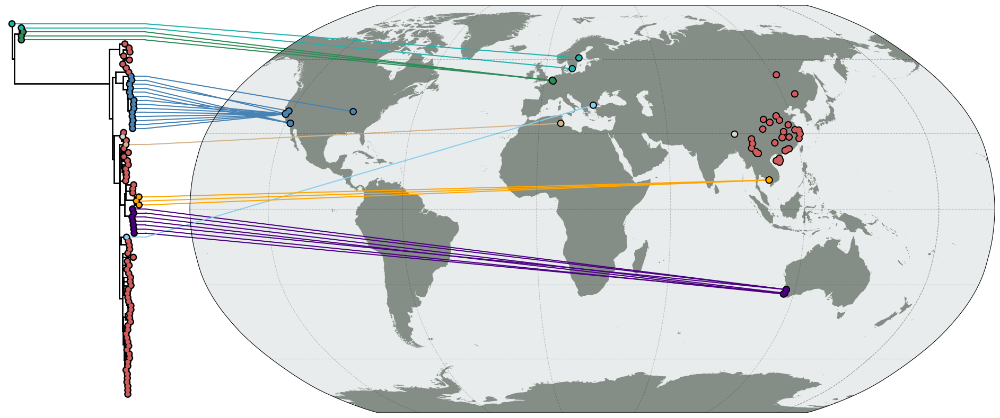

map tree#

Code#
import matplotlib as mpl
from matplotlib import pyplot as plt
from matplotlib.gridspec import GridSpec
import baltic as bt
from baltic import bt_utils
from baltic.curonia import connect_tree_to_map
mpl.use("Agg")
import cartopy
import cartopy.crs as ccrs
proj = ccrs.Robinson(central_longitude=25)
fig = plt.figure(figsize=(25, 10), facecolor='w')
gs = GridSpec(1, 2, width_ratios=[1, 6], hspace = 0.01, wspace = 0.0)
ax = plt.subplot(gs[0])
ax2 = plt.subplot(gs[1], projection=proj, facecolor='none')
## plot map features
scale='50m'
water='#e8eced'
land='#848E86'
ax2.add_feature(cartopy.feature.LAKES.with_scale(scale), facecolor=water, zorder=0)
ax2.add_feature(cartopy.feature.OCEAN.with_scale(scale), facecolor=water, edgecolor='none', zorder=0)
ax2.add_feature(cartopy.feature.LAND.with_scale(scale), facecolor=land, edgecolor='none', zorder=1)
ax2.gridlines(color='k', linestyle='--', alpha=0.2)
ax2.set_global()
## plot tree
colours = {'BEL': 'seagreen', '': 'lightgray', 'USA': 'steelblue', 'AUS': 'indigo', 'SWE': 'lightseagreen', 'TUN': 'tan', 'KHM': 'orange', 'GRC': 'skyblue', 'CHN': 'indianred'}
colourFxn = lambda k: colours[k.name.split('|')[2]] ## colour by country
ll = bt.io.load_newick('PB1-wmv6-93.treefile', 'divergence', absoluteTime=True)
ll.root_by_regression() ## root tree
ll.sort_branches(descending=True)
ll.plot_tree(ax, autoSort=False, zorder=10) ## plot tree
ll.plot_points(ax, colourFxn=colourFxn, zorder=20) ## add tip circles
## connect tree to map
tipCoordinates = {k.name: tuple(map(float, k.name.split('|')[4].split('_'))) for k in ll.get_external()}
shoulderPositionFxn = lambda k: ll.treeHeight * 1.05
targetFxn = lambda k: k.name.split('|')[2] in ['BEL', 'SWE', 'KHM', 'AUS', 'USA', 'GRC', 'TUN'] ## only want tips in certain countries
connect_tree_to_map(treeAx=ax, mapAx=ax2, tree=ll, tipCoordinates=tipCoordinates, destinationProjection=proj, targetFxn=targetFxn, colourFxn=colourFxn, shoulderPositionFxn=shoulderPositionFxn, lw=1.5, zorder=1)
# connect_tree_to_map(treeAx=ax, mapAx=ax2, tree=ll, tipCoordinates=tipCoordinates, destinationProjection=proj, targetFxn=targetFxn, colourFxn=colourFxn, lw=1.5, zorder=1)
bt_utils.clean_axes(ax)
## add circles to map
ys, xs, cs = zip(*[(*tipCoordinates[k.name], colourFxn(k)) for k in ll.get_external()])
ax2.scatter(xs, ys, c=cs, s=50, edgecolor='none', transform=ccrs.PlateCarree(), zorder=10)
ax2.scatter(xs, ys, c='k', s=100, edgecolor='none', transform=ccrs.PlateCarree(), zorder=9)
plt.savefig('map-tree.png', bbox_inches='tight')\n